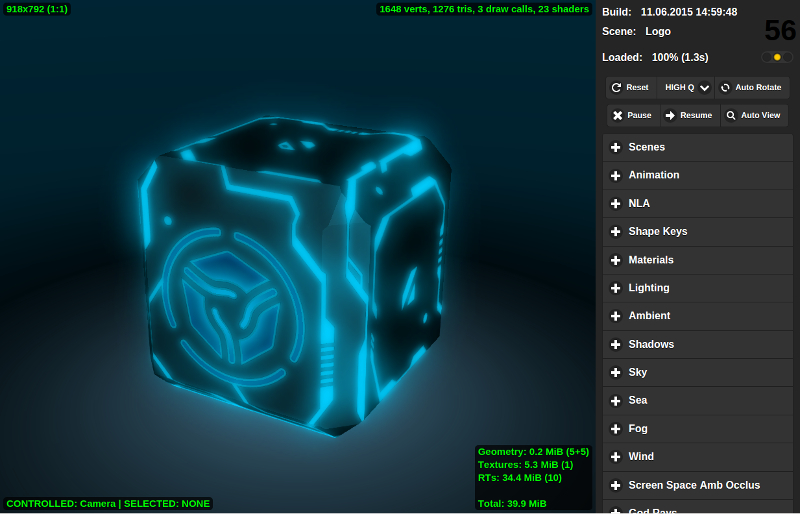

Scene Viewer¶
Navigation¶
To control the camera hold down a mouse button and move the mouse. Also control can be performed using the W, A, S, D, R, F keys: forward, left, back, right, up, down. Arrows and numpad keys can be used as well. In the Target camera mode it’s possible to focus on the selected object using the Z or .(dot) keys.
The Side Panel¶
The side panel consists of three areas: the information board, basic control buttons and the list of drop-down panels with additional control elements differentiated by functionality.
{kind=link}
Control elements list in top-to-bottom order¶
- Build
The engine build date and time. In the developer version this shows the page load time.
- Scene
Loaded scene name from the
assets.jsonfile. Path to the file pops-up on mouse hover.- Loaded
Loading progress and time.
- Reset
This button deletes the saved name of the last viewed scene and reloads the page back to display the default scene.
- LOW Q - HIGH Q - ULTRA Q
Drop-down menu for choosing the performance profile of the engine.
See also
- Pause
Pause rendering.
- Resume
Resume rendering.
- Auto View
Activate the automatic scene switching mode; the delay between views is 1 second.
- Scenes
A double-level list of the categories and scenes from the
assets.jsonfile.- Animation
Animation controls. When viewing animated models it’s possible: to select an object and switch its animation with a drop-down menu, switch cyclic animation mode, stop and resume animation, set the required frame (the animation should be stopped).
- Materials
Material properties setup. A material can be selected using the drop-down menu. At the moment only a limited range of properties is supported.
- Lighting
Direct lighting parameters setup. A light source can be selected using the drop-down menu. Changing color and intensity is supported. Daytime and sun lighting parameters can also be tweaked on this panel.
- Ambient
Ambient lighting parameters setup. Changing the colors and intensity of a hemispheric ambient model is supported.
- Shadows
Shadow parameters setup, including shadow cascades and shadow edges softening parameters.
- Sky
Dynamic sky parameters setup such as color, sun light scattering parameters etc.
- Sea
Water rendering parameters setup, including color transitions by depth and by shore distance, foam and subsurface scattering parameters, waves dynamics etc.
- Fog
Fog parameters setup, including density and color.
- Wind
Wind parameters setup, including direction and strength.
- Screen Space Amb Occlus
Ambient occlusion parameters setup.
- God Rays
Crepuscular rays effect parameters setup.
- Bloom
Bright light effect parameters setup.
- Depth of Field
Depth of field effect parameters setup.
- Color correction
Color correction parameters setup, including brightness, contrast, exposure and saturation.
- Anti-aliasing
Selecting the anti-aliasing method.
- Audio
There is a mixing mode switch on the panel. After it is enabled the mixer interface becomes visible (only for scenes with sound sources).
- Stereo View
There is a stereoscopy mode switch on the panel.
- Debug
This panel contains a range of debugging tools, including the wireframe mode and the postprocessing stages viewer switches.
Indicators¶
- Frames per second counter
This is located in the top right corner. It displays the averaged and rounded value for the last 1.5 seconds.
- Viewport dimensions
This is located in the top left corner. It displays the viewport dimensions in pixels.
- Selected object and controlled object
This is located in the left bottom corner. It displays the names of selected and controlled objects. Object selection can be performed with the mouse. To control the object directly (normally for physics debugging) press the
Qkey and click on the object. The object movement is performed with theW,A,S,Dkeys. To exit the control mode press theQkey and click on an empty space. The indicator also displays the distance to the selected object in Blender units (meters equivalent).- Scene complexity indicator
Is located in the top right corner of the rendering area. It displays the number of vertices, triangles and WebGL calls on the main rendering scene (i.e. shadow rendering calls are not included, for example).
- Video memory indicator
Is located in the bottom right corner of the rendering area. It displays the amount of video memory used by geometry, textures, render targets, and also the total memory usage.
- Scene load errors indicator
Is located under the FPS counter. Shows errors and warnings which occurred during scene load. Red light means errors, yellow - warnings and green means that the scene was loaded successfully.
{kind=link}